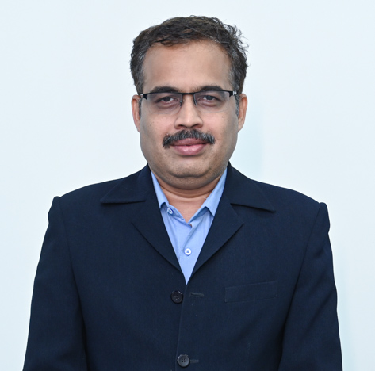
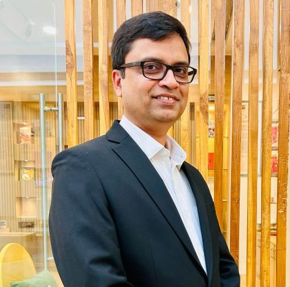
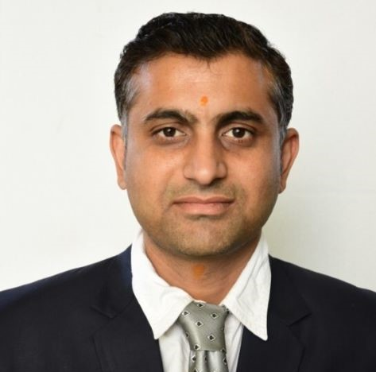
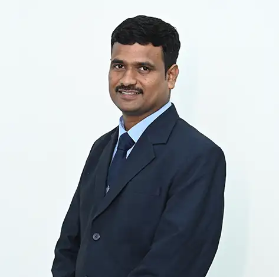
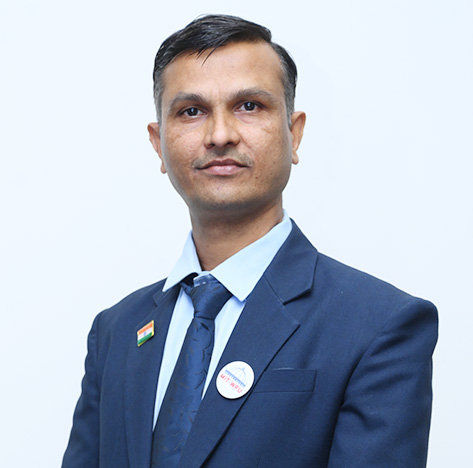
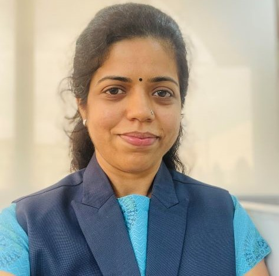
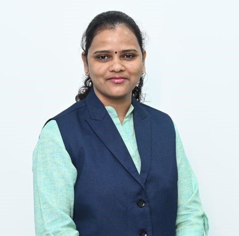
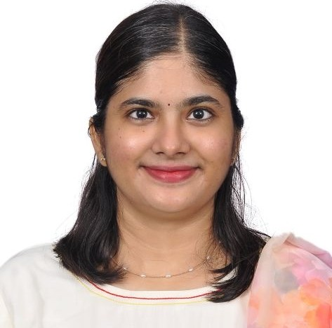
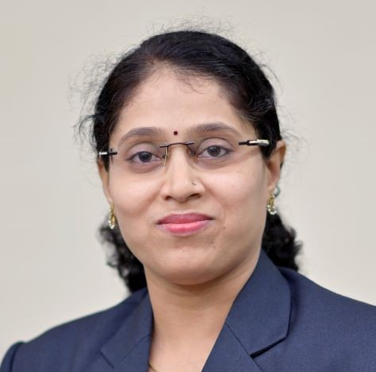

Prof. Ashwin Bhanudas Kuchekar
Dean & Professor
Novel Drug Delivery Systems, Formulation and Development, Design of Experiments, Quality by Design, Six Sigma
Dean & Professor
Novel Drug Delivery Systems, Formulation and Development, Design of Experiments, Quality by Design, Six Sigma

Associate Professor and Program Director
Dr. Abhijeet Subhash Sutar is a distinguished academician and researcher in the domain of Pharmaceutical Chemistry and Pharmaceutical Analysis, currently serving as Program Director) at Dr. Vishwanath Karad MIT World Peace University,…

Professor
Dr. Akshay M. Baheti is a Professor of Pharmacognosy at the School of Health Sciences and Technology, Dr. Vishwanath Karad MIT World Peace University, Pune, with over 25 years of experience in teaching, research, and administration in…
Professor
Dr. A. R. Chabukswar is an esteemed Professor in Pharmaceutical & Medicinal Chemistry at Dr. Vishwanath Karad MIT World Peace University, with a rich academic and research experience of 25 years. He has made significant contributions to…

Professor
Dr. Swati Jagdale is a highly accomplished academic and researcher in the field of pharmaceutics. She earned her B. Pharm. (1998), M. Pharm. (2000) from Pune University, and Ph.D. (2009) from Shivaji University Kolhapur. Currently, she…

Professor of Practices
Dr. Shitak Pathak is a seasoned pharmaceutical professional with over 28 years of illustrious career in industry. Dr. Shital has expertise in Analytical Research, in vitro bio equivalence, quality and compliance. Currently he is working as…
Associate Professor
Neuropharmacology, CNS dis, Pharmacokinetics and Toxicology

Associate Professor
Dr. Ranjit Vinayak Gadhave is an experienced academician and researcher in Pharmaceutical Sciences with over 20 years of experience in teaching and research. He completed his post-graduation and doctoral studies in Pharmaceutical Sciences…

Associate Professor
Dr. Prashant Joshi is an accomplished researcher and academician in the field of medicinal chemistry, specializing in natural product-based drug discovery. He earned his B. Pharm. from Mahakal Institute of Pharmaceutical Sciences, Ujjain…

Associate Professor
Dr. Vijayapandi Pandy is an Associate Professor in the Department of Pharmaceutical Sciences at the School of Health Sciences & Technology, MIT World Peace University, Pune, Maharashtra, India. He obtained his B. Pharm degree with…

Associate Professor
Dr. Anil Pawar is an Associate Professor at the School of Health Sciences and Technology, Dr. Vishwanath Karad MIT World Peace University, Pune, with over 17 years of experience in academic teaching, research, and industry. He holds a B.…
Associate Professor
Dr. Satish A. Polshettiwar is a highly accomplished Researcher Associate Professor and Academic Co-ordinator PG Program, at Dept of Pharmaceutics, School of Health Sciences and Technology, Dr Vishwanath Karad MIT World Peace University,…

Associate Professor
Dr. Amol Tagalpallewar completed his graduation and post-graduation from Sudhakarrao Naik Institute of Pharmacy Pusad in June 2003 and May 2005. He Obtained Ph.D. on topic “Formulation and Evaluation of Novel Ophthalmic Drug Delivery…
Assistant Professor
Synthetic Chemistry,Pharmaceutical Organic Chemistry,Computer Aided Drug Design,Green Chemistry,Microwave Synthesis

Assistant Professor
Dr. Nilesh Bajad completed his Doctoral degree from the Indian Institute of Technology (BHU), Varanasi, under the Prime Minister’s Research Fellowship (PMRF), India’s most prestigious doctoral fellowship awarded by the Ministry of…

Assistant Professor
Biomaterials, thin polymeric films, bioengineering, nanotechnology, and advanced drug delivery systems

Assistant Professor
Dr. Ganesh Bhaurao Choudhari is an Assistant Professor with a M. Pharm. in Pharmaceutical Chemistry and a submitted Ph. D. With over 12.6 years of experience in undergraduate academics, 7 years in postgraduate academics, and 3 years in…
Assistant Professor
Preclinical screening of diabetes and Inflammatory Disease models
Assistant Professor
Dr. Ashwini Gawade is a highly qualified academic with a diverse range of experience in the pharmaceutical industry. She holds a B. Pharm. (2011), M. Pharm (2013) and Ph.D (2020) from Pune University. After completing her studies, she…

Assistant Professor
Bioinorganic Chemistry, Medicinal Chemistry, Molecular Modelling

Assistant Professor
Dr. Yogita Ozarde is an accomplished researcher and teacher with a total of 20 years of experience. She completed her B. Pharmacy and M. Pharmacy from Shivaji University, Kolhapur and her Ph.D from Savitribai Phule Pune University, Pune.…
Assistant Professor
Neuropharmacology, Alzheimer’s disease, Cerebral ischemia Cancer chemotherapy, Toxicology, Immunopharmacology, Metabolic syndrome

Assistant Professor
Drug design, discovery against Neurodegenerative disorders. Computational design, molecular docking, molecular dynamics simulations, QSAR modelling. AI and ML based screening and design of small molecules. Synthetic medicinal chemistry, in…
Assistant Professor
Dr. Asim Samanta is currently serving as an Assistant Professor in the School of Health Sciences and Technology at Dr. Vishwanath Karad MIT World Peace University, Pune, India. He holds an M. Pharm (Pharmaceutics) degree from Jadavpur…

Assistant Professor
Dr. Arti Swami is an Assistant Professor in the Department of Pharmaceutical Chemistry at the School of Health Sciences and Technology, Dr. Vishwanath Karad, MIT World Peace University, Kothrud, Pune. She has over 15 years of academic…

Assistant Professor
Dr. Jehath Syed is a clinical pharmacist and researcher currently serving as Assistant Professor in the Department of Pharmaceutical Sciences at MIT World Peace University, Pune. With specialized expertise in geriatric care,…